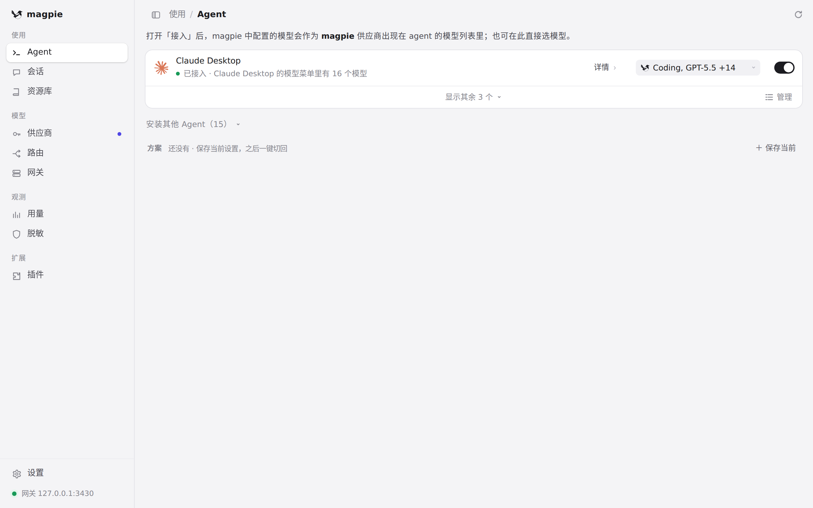
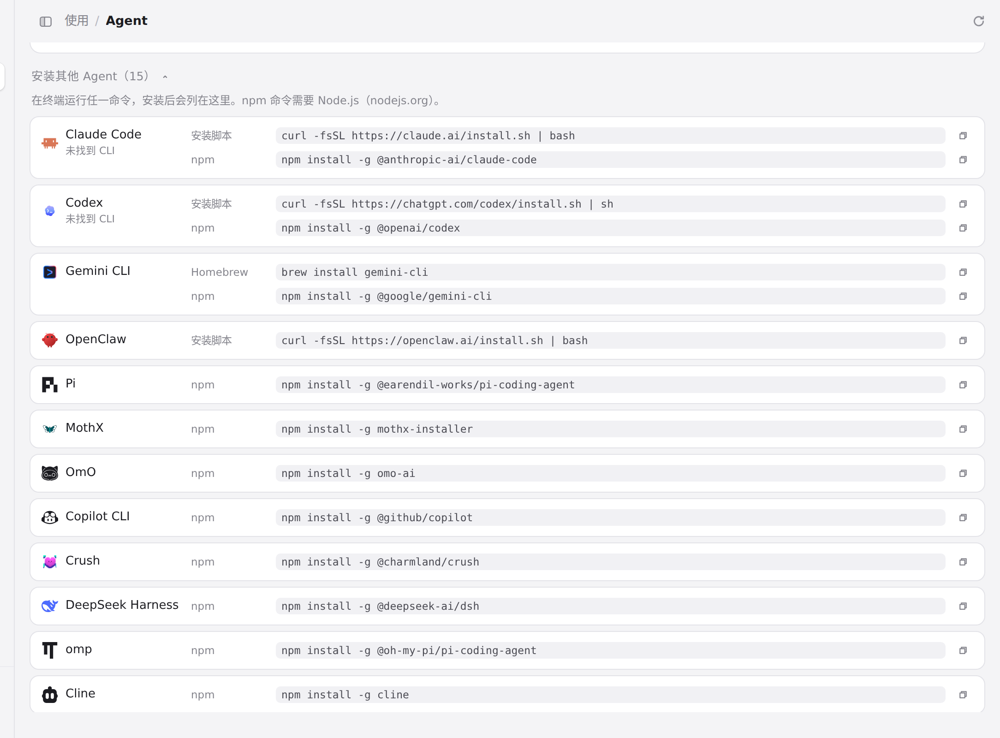

#1088 界面预览
commit cb7f931 · 回到 PR · Agent 页接入 OpenClaw：未安装时在「安装其他 Agent」中给出官方的 script/PowerShell 安装命令并使用官方彩色图标；安装接入后在行内提供主模型与可按顺序增删、上移的降级模型编辑器（选完即保存），相关文案已补中、英、繁中、日、德。
红线是鼠标走过的轨迹，红色圆环是一次点击；底部文字是这一步在做什么。空格暂停，← → 逐段查看。

Agent 页的 OpenClaw 安装入口 · Agent 页：本机 Agent 列表与收起的「安装其他 Agent」

Agent 页的 OpenClaw 安装入口 · 展开后的「安装其他 Agent」：OpenClaw 一行的官方安装方式